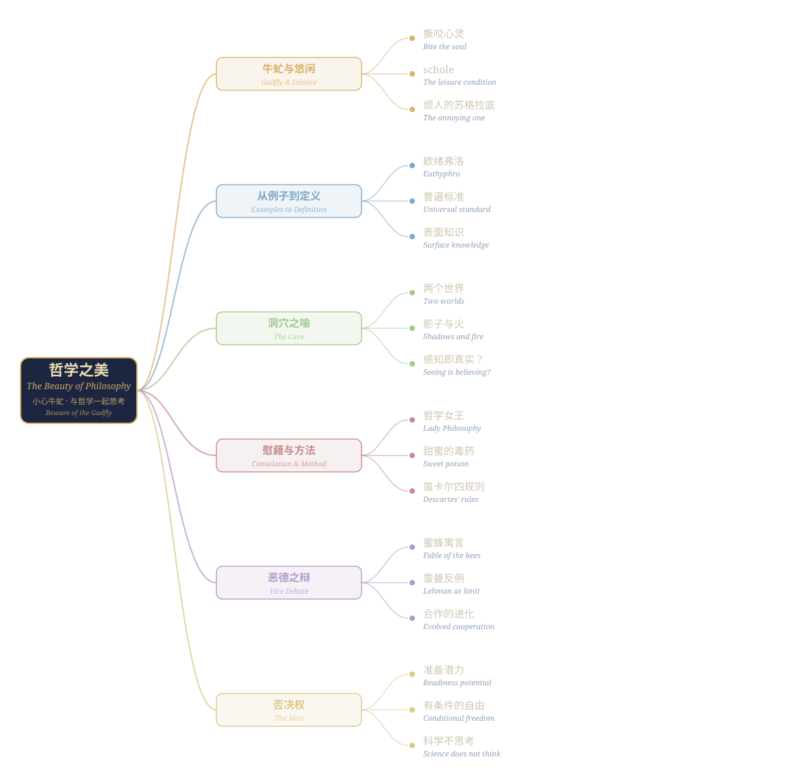

哲学之美
〇 · 书籍信息
基本信息
| 书名 | 「美」不在结论在动作——作者引用卡夫卡定调：「我认为，人们应该只读那些撕咬人心灵的作品」——「优秀的哲学揪人心，撕咬着人的心灵」：哲学之美是被撕咬过后的自由 |
|---|---|
| 作者 | 艾克哈特·玛腾斯——德国中学哲学教师出身：「我结合的是自身在学校课堂上的思考经验」——这本书是课堂派哲学导论：每章一个具体案例，从苏格拉底的法庭讲到神经科学的实验室 |
| 主线 | 作者自陈贯穿全文的主线——「对个体和社会来说，自由的思想和行为意味着什么？」——并借康德四问立框架：「我能知道什么」「我应该做什么」「我可以希望什么」以及终极命题「人是什么」 |
| 一句话 | 哲学史上所有的「牛虻」都在问同一件事：你是否还愿意自己思考——从苏格拉底的法庭到李贝特的实验室，自由意志是被一代代人重新赢得的。 |
一 · 核心主题总览
这部哲学导论里的四组母题：① 牛虻与悠闲
哲学的两个前提：牛虻——「苏格拉底不断地质问城邦的民众，直击他们的心灵」；悠闲——「这样的哲学体验需要『悠闲』（希腊语：schole）。「悠闲」不仅需要以生活、工作等外部条件的自由为前提，还要有从自己思想束缚中解放的意愿」——柏拉图《泰阿泰德篇》里苏格拉底对比法庭奴隶式发言与自由人的从容研究：「他们只能任由对手站在身边向他们施压。他们古板狭隘，墨守成规」——思考需要不被滴漏计时的时间。
② 西西弗斯与屈辱史
导论给出「人的屈辱清单」：「由于哥白尼『日心说』的提出，地球上的人类不再是宇宙的中心……根据达尔文的进化论，我们不再是创世纪的皇冠……弗洛伊德的精神分析学说，人类的理智不再是『主导』……就如弗洛伊德将自己的成就视为第三自恋屈辱」——而西西弗斯是「第一位哲学家」：「尽管在对抗众神的过程中冒着失去生命的危险，但西西弗斯仍决定以外在的不自由作为代价，为自由一搏」——「尽管他可能未深入地考虑『艰辛的自由或幸福的奴役』这一根本问题，但西西弗斯对其生活方式的选择足以使他成为第一位哲学家」
③ 康德的道德法则
康德章是全书的重心：「刻在国王山城堡纪念碑上」的《实践理性批判》结语：「有两样东西……头上的星空和心中的道德法则」——「康德关于人类『价值』的哲学思想实际上成了 1948 年联合国编撰《普世人权宣言》的基础」；定言命令的证明不靠经验不靠宗教：「既不能以源自经验的（『人间』），也不能以宗教的，又或者形而上的信条（『天堂』）来证明，而『只能靠理智来感觉』」；连「十岁的孩子」看到「正派的人」不因奖惩诋毁无辜，也会「从单纯的赞同变为钦佩……最终成为最高的崇敬」
④ 自由意志之战
第九章把战场搬进实验室：「根据这些研究，我们意愿决断和做决定的大脑过程是一样的……自主性是幻想」——李贝特实验：「他们要求受测者做的行为……在他们有意识地想要按下杠杆之前就先以脉冲（『准备潜力』）确认」——但李贝特本人留了余地：「受测者可以自己改主意……这段时间是可以测量的」——「有意识行为是……决定，哪些应该在行为上表现出来，哪些应该被抑制」——自由从「发起行动」退守到「否决行动」：意志的最后一道防线是 veto
二 · 第一段 牛虻的遗产 —— 苏格拉底与洞穴—— 欧绪弗洛 · 理型 · 洞穴 ——
欧绪弗洛的教训
第二章从一桩家庭官司讲起：「欧绪弗洛回答了苏格拉底何为虔诚、何为正义的问题，并表示他此刻的行为便是虔诚的表现：控告他人的不虔诚行为，即便那个人是自己的父亲」——苏格拉底要的不是例子：「不管是凡人还是神灵，苏格拉底并不想询问其敬神行为的事例，而是想找到一条普遍的标准」——「苏格拉底的问题针对的是一个具有决定性的虔诚的『理型』（希腊语，idea，字面义：形式），而不是许多具有争议的虔诚的事例——这是第一次谈到柏拉图所谓的『理型论』」——哲学思考的起点：从「举例」升级到「定义」。
◆ 语言学习 · 概念 · 理型
| 理型 | idea：字面义「形式」——普遍标准之所在 |
|---|---|
| 举例之谬 | 「神灵的行为并不是标准」：神自己也在吵架 |
| 普遍标准 | 苏格拉底的猎物：不问事例问定义 |
| 表面知识 | 「苏格拉底想要揭露欧绪弗洛的表面知识」 |
句型 ｜ 「苏格拉底并不想询问其敬神行为的事例，而是想找到一条普遍的标准。」——哲学第一课：从「给我例子」到「给我定义」——所有概念的混乱，都始于用例子冒充定义。
洞穴之喻
第三章展开柏拉图最著名的画面：「在对整个洞穴之喻的进一步阐述中，『两个世界』的理论更为清晰明了」——太阳之喻与线之喻层层递进：「这两个比喻，解释了真实的理性世界和虚假的感官世界的差异。一般来说，我们认为自己感知到的便是真实的，并相信因此拥有可靠的知识」——「『牛虻』苏格拉底就质疑了这种生活方式，也使我们为日常思考的确定性而感到困惑」——洞穴之喻的当代读法：信息茧房就是洞穴，刷到的就是影子；哲学的功能是提醒你墙上有火。
◆ 语言学习 · 概念 · 洞穴
| 两个世界 | 理性世界与感官世界：知识的分层 |
|---|---|
| 影子 | 被误认的真实：日常确定性的真相 |
| 太阳之喻 | 善的理念如太阳：一切可见的前提 |
| 火与墙 | 当代版洞穴：推送即影子 |
习语 ｜ 「我们认为自己感知到的便是真实的。」——洞穴的日常版：不是暗喻是诊断：越是笃定「眼见为实」，越可能坐在影子的观众席——哲学之美的第一站，是让你对确定性起疑。
三 · 第二段 慰藉与方法 —— 波爱修斯与笛卡尔—— 哲学女王 · 四条规则 ——
哲学的慰藉
第五章讲波爱修斯狱中写《哲学的慰藉》：「哲学女王用严厉的话语——以准备好的抚慰措施——驱赶了试图以靡靡之音安抚波爱修斯的诗神缪斯们：『是谁让这些艺伎和这个病夫在一起的？她们不仅医治不了他的病痛，还会用甜蜜的毒药，使其雪上加霜』」——诊断的结论惊人：「你饱受流徙的痛苦……我说的是漂泊，而不是驱逐；如果你自己非要说是驱逐，那我只能说，你怎么将自己驱逐到了这样遥远的地方！」——哲学的安慰不是甜的：它先拒绝你的自我叙事，再给你一个更大的框架（「他忘了，他作为人首先就是上帝的创造物」）——真正的慰藉从剥夺借口开始
◆ 语言学习 · 概念 · 哲学女王
| 哲学女王 | 《哲学的慰藉》的人格化：哲学化身医者 |
|---|---|
| 甜蜜的毒药 | 缪斯式安慰：让人「对现状泰然处之」 |
| 自我流放 | 诊断书：「你怎么将自己驱逐到这样遥远的地方」 |
| 神佑与预见 | 第五卷的解法：providentia 与 praevidentia 之别 |
句型 ｜ 「她们这样做，是用情欲的荆棘去毁坏理性的累累果实。」——哲学女王的驱赶令：安抚有两种：让人麻醉的和让人清醒的——哲学选后者：先疼，后愈。
笛卡尔的四条规则
第六章讲方法论，四条规则原文排开：「1．证据：『如果我不能靠证据辨别某物是真实的，那么我决不接受某物为真实的……让我丝毫不去怀疑它』；2．分解问题：『我想探索的每一个难题都按需被分解成尽可能多的部分』；3．层级顺序：『先从最简单、最容易认识的事物开始着手，一步步地阶梯式逐步上升』；4．完整性：『全面完成完整的列举和普适性的概要，以确保无遗漏』」——但作者不忘补上当代的回声：「通过对实证数学思想或者量化思想的高估的经历，如今的我们……可以更好地认识科学主义独占诠释的黑暗面……以及自诩『大自然的主宰者和拥有者』的人类身上的傲慢」——方法论的遗产与账单一起收
◆ 语言学习 · 概念 · 健康的心智
| 四条规则 | 证据—分解—层级—完整：笛卡尔方法论 |
|---|---|
| 清晰分明 | clare et distincte：笛卡尔的真理标准 |
| 科学主义 | 量化思想的独占：方法论的当代账单 |
| 主宰与拥有 | 「自诩『大自然的主宰者和拥有者』」的傲慢 |
习语 ｜ 「如果我不能靠证据辨别某物是真实的，那么我决不接受某物为真实的。」——方法论第一条的当代读法：它同时是新闻素养与投资纪律——笛卡尔四规则是通用思维工具箱，人人可用。
四 · 第三段 恶德与自由 —— 曼德维尔到李贝特—— 蜜蜂寓言 · 定言命令 · veto ——
蜜蜂的寓言
第七章讲贪婪之辩：「曼德维尔在《蜜蜂的寓言》中反而声称，贪婪是好的」——「私人恶德即公众利益」的悖论在 2008 年金融危机后被重提：「危机发生的主要原因是银行家的贪婪……在贪婪下掩盖的到底是什么……这些却鲜少有人探究」——作者给出当代判词：「在经验的基础上，曼德维尔的悖论必须再添上两条重要的限制：第一条限制是，私人恶德若不加以规范，就不仅损害个人，也损害公众。比如 2008 年 9 月 15 日雷曼兄弟银行破产就是个例子」；「第二条限制……人类在进化过程中，并不仅仅像社会达尔文主义主张的那样，发展出贪婪和自私，而且也发展出合作形态」——「看不见的手」也顺便祛魅：「『看不见的手』这个比喻在亚当·斯密的作品中只用了一次……他并非有意把这个作为市场经济设定的基本原则」
◆ 语言学习 · 概念 · 两条限制
| 私人恶德即公众利益 | 曼德维尔悖论：贪婪的辩护词 |
|---|---|
| 雷曼兄弟 | 2008.9.15：悖论失效的反例 |
| 合作形态 | 进化人类学的修正：人不止发展自私 |
| 看不见的手 | 「只用了一次」：被过度征用的隐喻 |
句型 ｜ 「私人恶德若不加以规范，就不仅损害个人，也损害公众。」——两条限制的第一条：市场神话的边界：贪婪可以是动力，但必须是「被规范的动力」——2008 年是最贵的学费。
从康德到李贝特
第九章的终局之战：李贝特实验给出「准备潜力」先于意识的证据——「所谓的李贝特实验也被当作所谓的表面证据」，辛格甚至宣称「我们应该停止讨论自由」——但李贝特本人留下否决权：「受测者可以自己改主意，比如说要不要停止脉冲……对李贝特来说……人类的意愿并不是绝对的而是有条件的自由，有最后的决定是否反对的自由」——作者引入海德格尔垫底：「科学不思考。」——「词源学上来自『感谢』（danken）……『感谢』在内容上包含『考虑』的意思，这在它的『存在』上就意味着『持续而集中的停留』」——思考是停留：科学量化不了凝视——自由意志的战场，最终在「是否愿意停留着思考」这件事上
◆ 语言学习 · 概念 · 否决权
| 准备潜力 | 先于意识的脑电脉冲：决定论的武器 |
|---|---|
| veto | 李贝特保留的余地：可以不改主意，但可以否决 |
| 科学不思考 | 海德格尔的挑衅句：量化覆盖不了停留 |
| 停留 | denken＝danken：思考是持续而集中的停留 |
习语 ｜ 「人类的意愿并不是绝对的而是有条件的自由，有最后的决定是否反对的自由。」——全书最大的悬念收口：自由退守到了最后一道防线：不能决定冲动何时来，但能决定是否放行——veto 权是现代人最后的自留地。
五 · 人物图鉴与成长弧线—— 主角配角 · 一张表看穿 ——
主要人物
苏格拉底——第一只牛虻——「不断地质问城邦的民众，直击他们的心灵」：从例子逼向定义，被 70 岁处死仍不死
柏拉图——洞穴的画师——「太阳之喻和线之喻」：两个世界的分层图——理念知识首先是实践的程序性知识
康德——道德法则的立法者——「头上的星空和心中的道德法则」：定言命令成为《普世人权宣言》的哲学地基
李贝特——实验室里的牛虻——「准备潜力」实验者：却亲手保留「最后的决定是否反对的自由」
次要人物（功能位）
| 波爱修斯 | 狱中的病人——《哲学的慰藉》作者：被哲学女王诊断为「自我流放者」 |
|---|---|
| 笛卡尔 | 方法论的匠人——四条规则：「在我的自己和世界这本伟大的教科书中汲取知识」 |
| 曼德维尔 | 蜜蜂的辩护人——「私人恶德即公众利益」：被两条当代限制围住的悖论 |
| 海德格尔 | 「科学不思考」的挑衅者——把 denken 追到 danken：思考是停留 |
六 · 主题与象征—— 每个道具都在说话 ——
| 牛虻 ↔ 哲学 | 全书自喻——烦人的昆虫叮醒沉睡的城邦：哲学的第一美德是烦人 |
|---|---|
| 洞穴 ↔ 影子 | 确定性之疑——「我们认为自己感知到的便是真实的」：信息茧房的古典预言 |
| 哲学女王 ↔ 医生 | 慰藉观——拒绝甜蜜的毒药：先剥夺借口再给框架 |
| 蜜蜂 ↔ 贪婪 | 恶德之辩——悖论需要两条限制：规范与合作的进化 |
| 否决权 ↔ 自由 | 意志的防线——不能决定冲动何时来，能决定是否放行 |
七 · 写作手法赏析—— 怎么写，就能怎么学 ——
① 案例链结构
每章一个具体案例——法庭、监狱、书房、实验室：抽象问题全部落地成场景
② 教师视角
「自身在学校课堂上的思考经验」——课堂派写法：例子先行，术语随后
③ 康德四问立框
「我能知道什么／应该做什么／可以希望什么／人是什么」——全书章节的隐形目录
④ 引文丰富
原典直引＋出处注明——「参见第二章」「参见第九章」的交叉引用网：导论做成网络
⑤ 当代回声
每个古典案例都接一根现代引线——洞穴接信息茧房、曼德维尔接 2008、笛卡尔接科学主义
八 · 名段欣赏—— 原文精读 · 逐段赏析 ——
九 · 金句摘录—— 14 条 · 中英对照 · 带出处 ——
"「我认为，人们应该只读那些撕咬人心灵的作品。」卡夫卡曾在给友人的一封信中表明……优秀的哲学揪人心，撕咬着人的心灵。"—— 前言 · 小心牛虻
"在法庭受审申辩时，苏格拉底自比为一只牛虻。"—— 前言
"雅典人判了 70 岁的苏格拉底死刑，这一处决也最终使雅典人得以摆脱了这个烦人的苏格拉底。"—— 前言
"本书主线，贯穿全文的是这一问题——对个体和社会来说，自由的思想和行为意味着什么？"—— 前言
"这样的哲学体验需要「悠闲」（希腊语：schole）。"—— 前言
"苏格拉底并不想询问其敬神行为的事例，而是想找到一条普遍的标准。"—— 第二章 · 欧绪弗洛
"一般来说，我们认为自己感知到的便是真实的，并相信因此拥有可靠的知识。"—— 第三章 · 洞穴之喻
"尽管在对抗众神的过程中冒着失去生命的危险，但西西弗斯仍决定以外在的不自由作为代价，为自由一搏。"—— 导论 · 西西弗斯
"她们这样做，是用情欲的荆棘去毁坏理性的累累果实。"—— 第五章 · 哲学女王
"如果我不能靠证据辨别某物是真实的，那么我决不接受某物为真实的。"—— 第六章 · 笛卡尔
"私人恶德若不加以规范，就不仅损害个人，也损害公众。比如 2008 年 9 月 15 日雷曼兄弟银行破产就是个例子。"—— 第七章
"定言命令既不能以源自经验的……也不能以宗教的，又或者形而上的信条……来证明，而「只能靠理智来感觉」。"—— 第八章 · 康德
"海德格尔……其原因是：「科学不思考。」"—— 第九章
"人类的意愿并不是绝对的而是有条件的自由，有最后的决定是否反对的自由。"—— 第九章 · 李贝特
十 · 拓展阅读—— 原文 · 词条 · 译文 ——
十一 · 个人感悟与心得—— 三点心得 ——
三点感悟
① 给确定性留一道裂缝
洞穴之喻的日常读法：「我们认为自己感知到的便是真实的」——越是笃定越要自问：我是在看太阳，还是在看墙上的影子？信息时代，这是每天都要做的一道体检。
② 自由是贵的那种
西西弗斯的排序：「艰辛的自由或幸福的奴役」——所有省事的舒服都标着隐形价签：放弃思考的价格，是把方向盘交出去。
③ 守住否决权
李贝特的最后防线：冲动与欲望也许先于意识到达，但「是否放行」永远可以在你手里——veto 权是自由意志的最低配，也是最不可让渡的配置。
十一章读完，牛虻还在飞——从雅典的法庭到今天的实验室，它叮咬的问题始终没变：你是否还愿意自己思考？哲学之美的答案藏在李贝特保留的那半秒里：你可能管不住冲动什么时候来，但你永远可以决定——不放行。这就是人之为人的最后自留地，也是这本书想说的一切。
十二 · 一页速查（复习用）
| 牛虻 | 优秀的哲学揪人心：叮醒沉睡的城邦 |
|---|---|
| 例子与定义 | 从事例升级到普遍标准 |
| 洞穴 | 感知即真实的幻觉：哲学第一课 |
| 两条限制 | 恶德须规范＋合作的进化 |
| 否决权 | 最后的决定是否反对：自由的自留地 |
十三 · 全书思维导图—— 一图纵览 ——

一图纵览全书骨架 · 中英双语对照 · 手机端可左右滑动查看全图